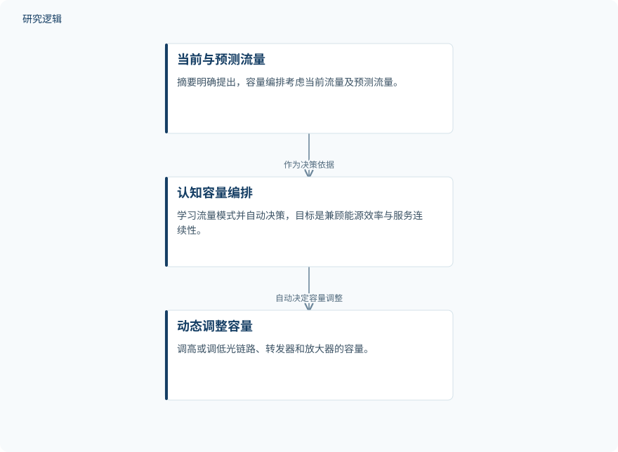

摘要解读
动态电信流量下节能光传送网络的认知容量编排模型
A Cognitive Capacity-Orchestration Model for Energy Efficient Optical Transport Networks Under Dynamic Telecommunications Traffic
解读更新 2026-10-23 08:17 · 依据公开摘要整理，未核验全文细节
通信流量快速波动，光传输网络却常按峰值维持固定容量，低负载时容易浪费能源。这篇研究提出由人工智能驱动的容量编排思路，值得关注的问题是：如何让网络容量随需求变化，同时守住业务连续性。
文章目录
峰值容量与波动流量之间的错配
摘要指出，5G、视频流和云服务使通信流量在分钟尺度内发生变化。传统光传输网络为承接峰值负载而维持固定容量，在低流量时段仍消耗较多能源；电力又是运营支出的重要组成部分，因此节能不能只看设备效率，还要关注容量是否贴合实际需求。
这一问题涉及光链路及其承载设备，而非单一软件功能。摘要同时强调，网络自动化需要适应动态业务需求、多厂商环境和物理层损伤，容量调整因而不能脱离传输质量与服务连续性来讨论。
利用当前与预测流量动态编排容量
作者提出“认知容量编排模型”：系统学习流量模式，结合当前与预测流量自动决策，再动态调高或调低光链路、转发器和放大器的容量。其明确目标是在动态流量下兼顾能源效率与服务连续性，而不是单纯压低功耗。
摘要还讨论了基于Transformer架构的大语言模型，列举配置生成、告警关联、故障诊断、路由与频谱分配，以及传输质量估计和场景建模等潜在用途。不过，这些能力如何接入所提容量编排模型，摘要没有给出具体实现关系，不能据此认定已构建完整的大模型控制系统。
依据摘要整理的容量编排过程


仅示意摘要明确描述的流量信息、自动决策与容量调整关系，不代表论文原图或已经验证的系统实现。
下载 SVG图示关系说明
实线表示相邻阶段的信息流，虚线表示跨阶段联系或反馈。
当前与预测流量 → 认知容量编排：作为决策依据；认知容量编排 → 动态调整容量：自动决定容量调整
摘要报告的是模型主张，而非节能实测
本次摘要明确报告的成果是提出上述容量编排模型，并说明其决策依据、调整对象与目标。摘要没有报告节能幅度、业务质量变化或运行测试结果。因此，“节能且不破坏服务质量”应理解为设计目标，不能当作已经验证的效果。
样本、比较与验证边界仍待查明
仅凭摘要，无法判断流量数据的来源、样本规模、网络拓扑、设备范围，以及是否使用仿真或实际网络验证；也无法确认比较基线、预测误差、容量切换代价和服务质量指标。这里的边界是摘要未提供相关信息，不意味着论文没有开展这些工作。
阅读启发：关注决策如何守住服务约束
阅读启发：对智能运维读者，更值得进一步查阅的是，流量预测如何转化为可执行的容量决策，服务连续性又如何约束这些决策。同时应辨清大语言模型承担的是配置与诊断辅助，还是直接参与容量控制，避免把一般能力介绍误读为本文已验证的系统功能。
以上为本站阅读启发与建议，不是论文已验证的结论。